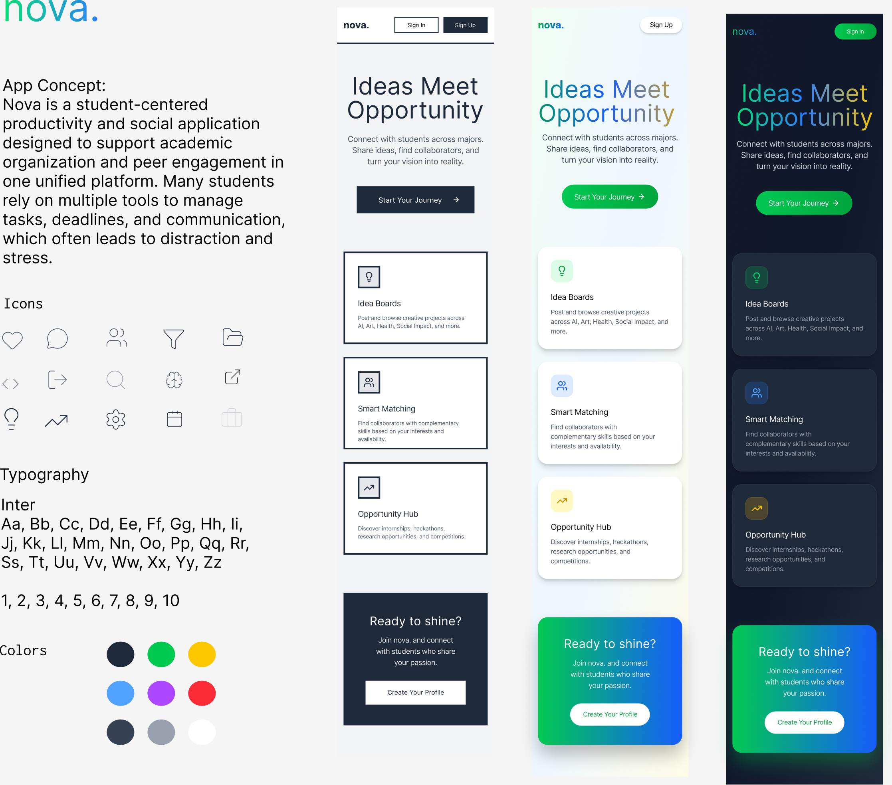

CST 328 – Digital Art & Design
Course Overview
CST 328 explores the intersection of visual design, UI, UX, and digital media technologies. The course covers design principles and their application to modern digital products, with an emphasis on usability, accessibility, and design thinking.
Topics included art and design foundations, raster and vector tools, UI systems (typography, color theory, layout grids), game UI evaluation, and critique-driven iteration leading to a final interactive prototype.
Course Outcomes
- Apply art and design fundamentals to digital and UI design work.
- Analyze and critique designs using professional design terminology.
- Practice user-centered design and design thinking methodologies.
- Create high-fidelity UI designs using raster, vector, and prototyping tools.
- Design accessible and usable interfaces following universal design principles.
- Present and document design work professionally.
Nova — Student Productivity App
Nova is a student-centered productivity and social application designed to consolidate academic organization and peer engagement into one unified platform, addressing the fragmentation that comes from juggling multiple tools for tasks, deadlines, and communication.
Key features designed: Idea Boards for posting and discovering creative projects, Smart Matching to connect students with complementary skills, and an Opportunity Hub for internships, hackathons, and competitions.
The project followed a full design process — concept, lo-fi wireframes, hi-fi mockups, and a Figma interactive prototype. Typography system built on Inter; custom color palette designed across light, color, and dark themes. Tools: Figma, Adobe Photoshop, Adobe Illustrator.
Design Poster

Project Documentation
Full documentation covering the app concept, lo-fi wireframes, design iterations, hi-fi screens, and the final icon and typography system.